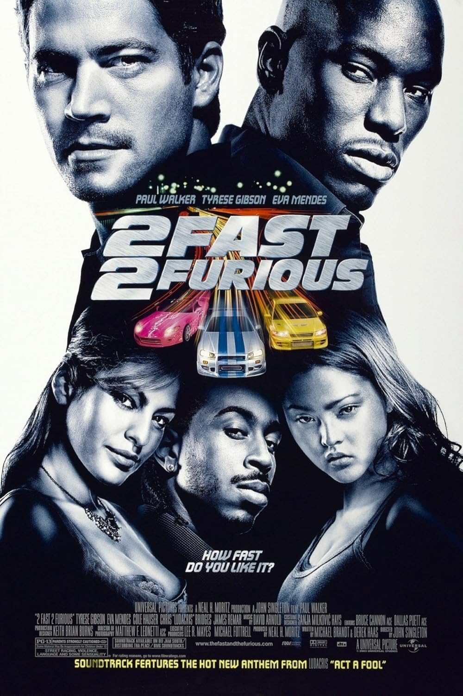
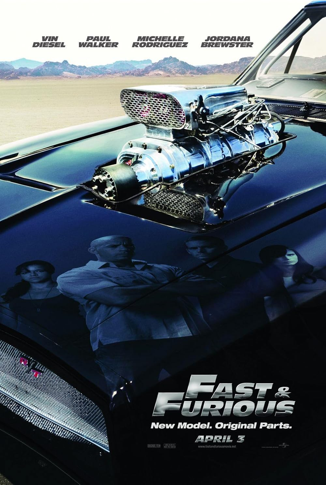
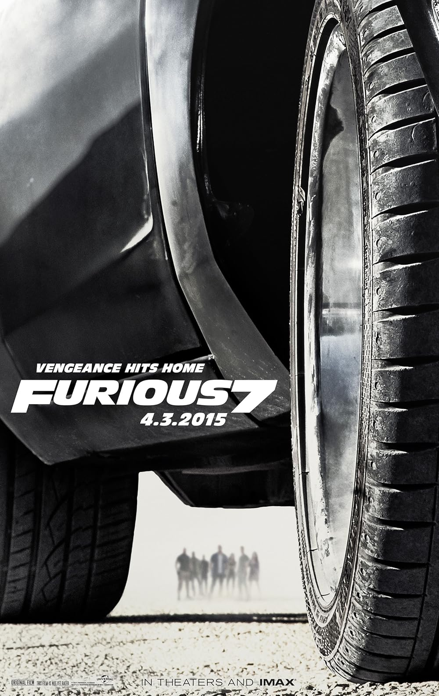
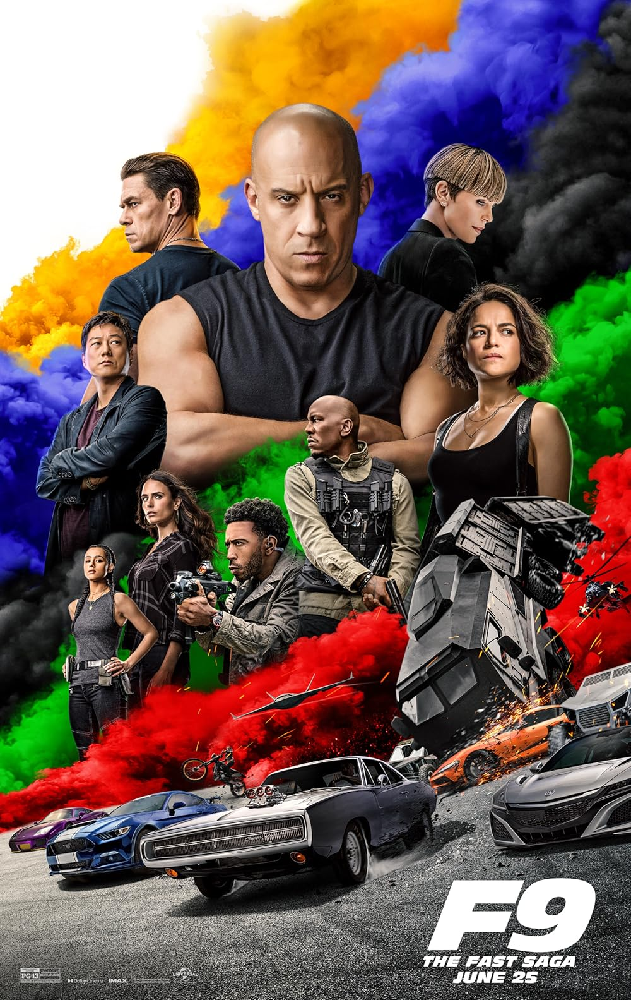

2001
Уличный гонщик Брайан О'Коннер внедряется в банду Доминика Торетто, подозреваемого в дерзких грабежах грузовиков. Но в процессе расследования Брайан сталкивается с моральной дилеммой.

2003
Бывший полицейский Брайан О'Коннер вынужден сотрудничать с Управлением по борьбе с наркотиками, чтобы поймать наркобарона. К нему присоединяется старый друг Роман Пирс.

2006
Американский парень Шон Босуэлл переезжает в Токио, где погружается в мир подпольных гоночных соревнований. Он учится искусству дрифта у загадочного пилота Хана.

2009
Доминик Торетто возвращается в Лос-Анджелес, когда его возлюбленная Летти погибает при загадочных обстоятельствах. Он объединяется с Брайаном О'Коннером, чтобы отомстить.

2011
Дом и Брайан собирают команду для одного последнего дела - ограбления бразильского наркобарона. За ними по пятам следует агент Люк Хоббс.

2013
Хоббс предлагает Дому и его команде полное помилование, если они помогут поймать группу наемников, одним из которых является считающаяся погибшей Летти.

2015
Деккард Шоу, брат Оуэна Шоу, мстит команде Торетто. Фильм знаменит трюками с автомобилями, выпрыгивающими из самолетов, и трогательным прощанием с Полом Уокером.

2017
Когда таинственная женщина-кибертеррористка Сайфер шантажом заставляет Дома предать своих друзей, команда сталкивается с испытаниями, которых раньше не было.

2021
Дом Торетто и его семья должны остановить заговор мирового масштаба, возглавляемый его родным братом Якобом, который работает с их заклятым врагом Сайфер.

2023
Дом Торетто и его семья сталкиваются с их самым грозным противником - Данте Рейесом, сыном наркобарона, который мстит за смерть отца и угрожает разрушить всё, что дорого Дому.